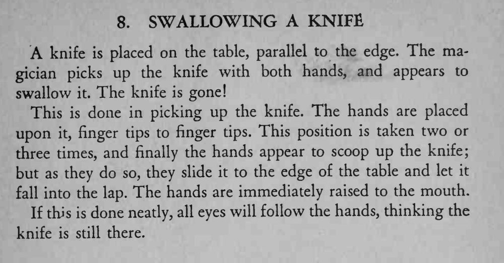

魔术师双手捧起桌上的餐刀，做出把刀吞下去的姿势，刀却不见了。
双手要自然地反复做同一动作，最后一滑要轻，别让刀碰出声。

A knife is placed on the table, parallel to the edge. The magician picks up the knife with both hands, and appears to swallow it. The knife is gone! This is done in picking up the knife. The hands are placed upon it, finger tips to finger tips. This position is taken two or three times, and finally the hands appear to scoop up the knife; but as they do so, they slide it to the edge of the table and let it fall into the lap. The hands are immediately raised to the mouth. If this is done neatly, all eyes will follow the hands, thinking the knife is still there.